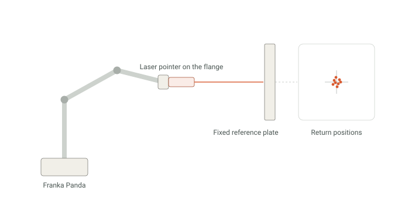
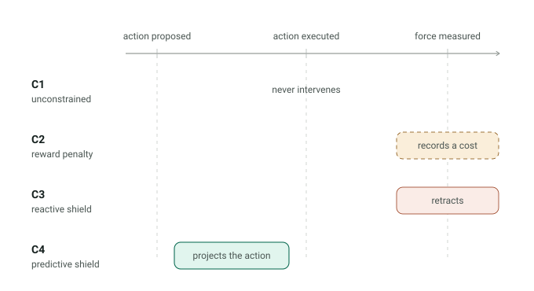
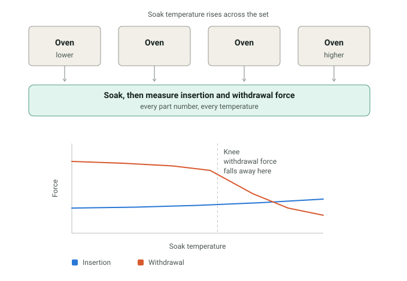
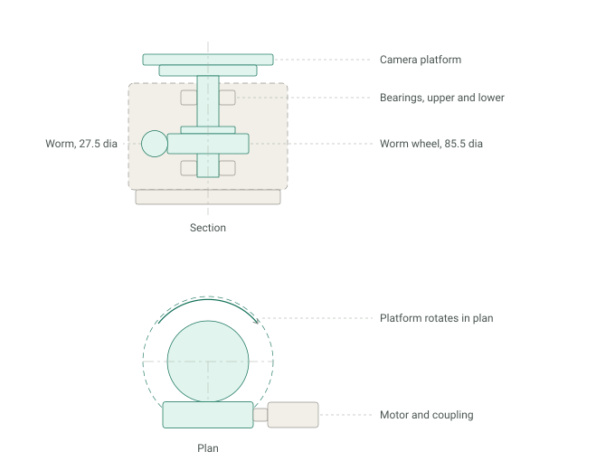
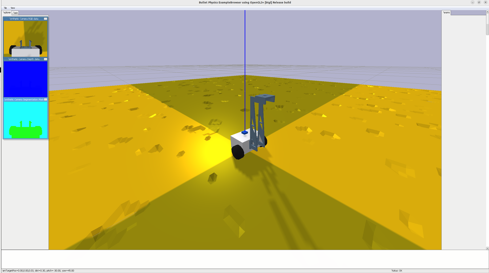
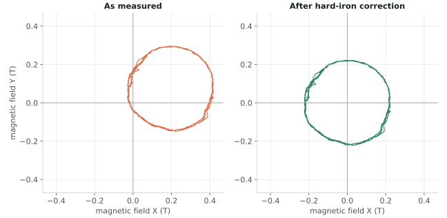
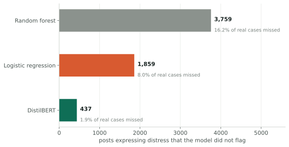
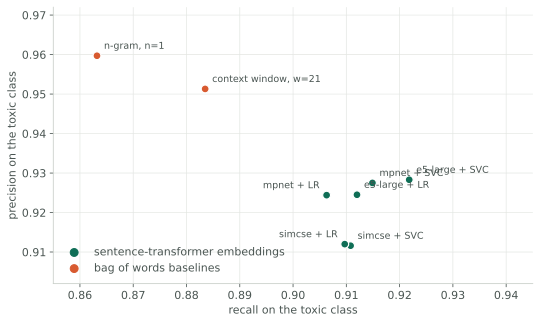
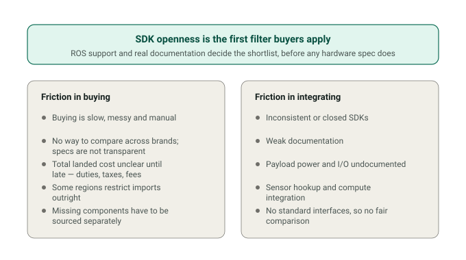
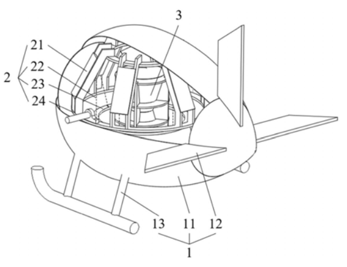

Experience
Much of this was done under NDA, so the drawings here are mine, redrawn from scratch.
Appliance Validation Cell
A robotic test cell built around 1:1 mock-ups, qualified under a 2 mm requirement.
Miele Technology, Emerging Technologies Lab · 2026

Safe Control for Human-Robot Interaction
Four classes of safety mechanism compared on one task, with the mechanism as the only variable.
Northeastern University · 2026, ongoing

Surgical Robot Column and Beam Design
Guiding a lift column against a moment that can arrive from any bearing.
Sagebot, surgical robotics · 2024

Aerospace Connector Modeling and Validation
Ten months predicting how a connector loses its grip, and ageing real ones to find out.
Harbin Institute of Technology · 2023–2024
Projects

Three-Axis Electro-Mechanical Design
An outdoor camera stage sized from load estimates through to finite element validation.
Undergraduate final project · 2022–2023

Pothole-Avoidance Mobile Robot
A robot designed and built with a partner, with the avoidance policy trained in simulation.
Northeastern University · 2025

Multi-Robot SLAM and ROS Node Development
Two TurtleBots mapping a shared space, and the namespace collisions in between.
Northeastern University · 2024

GPS-Free Mobile Robot Localization
Sensor drivers, magnetometer calibration and heading fusion, measured against GPS over a 3.8 km drive.
Northeastern University · 2024

Distress Detection from Text
Three models on 232,000 posts, ranked by the only error that really costs something.
Northeastern University · 2025

Toxicity Classification and Error Analysis
Eight toxicity classifiers, and why the best one depends on which mistake you would rather explain.
Northeastern University · 2025

Robot Marketplace and Customer Discovery
Six weeks of customer interviews, and the finding that engineers filter on the SDK before the specs.
Venture competition · 2025
Tripster
A travel app that plans itineraries and matches companions. Product architecture and planning flow.
In development · 2026
Also

Patent pending
Pod-type aviation low-frequency three-component natural field electromagnetic exploration system and control method. CN 114355459 A, filed January 2022.
RoboMaster
National first place, RoboMaster Robotics Competition, 2021.